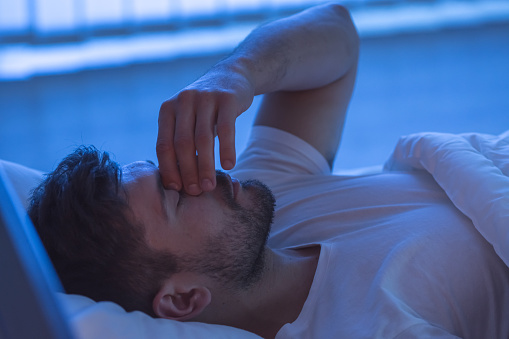

Sleep and Wake Disorders
Sleep disorders (or sleep-wake disorders) involve problems with the quality, timing, and amount of sleep, which result in daytime distress and impairment in functioning. Sleep-wake disorders often occur along with medical conditions or other mental health conditions, such as depression, anxiety, or cognitive disorders. There are several different types of sleep-wake disorders, of which insomnia is the most common. Other sleep-wake disorders include obstructive sleep apnea, parasomnias, narcolepsy, and restless leg syndrome.
Consequences of Lack of Sleep and Coexisting Conditions
Sleep helps your brain function properly. Not getting enough sleep or poor quality sleep has many potential consequences. The most obvious concerns are fatigue and decreased energy, irritability and problems focusing. The ability to make decisions and your mood can also be affected. Sleep problems often coexist with symptoms of depression or anxiety. Sleep problems can exacerbate depression or anxiety, and depression or anxiety can lead to sleep problems.
Lack of sleep and too much sleep are linked to many chronic health problems, such as heart disease and diabetes. Sleep disturbances can also be a warning sign for medical and neurological problems, such as congestive heart failure, osteoarthritis and Parkinson’s disease.
Insomnia Disorder
Insomnia, the most common sleep disorder, involves problems getting to sleep or staying asleep. About one-third of adults report some insomnia symptoms, 10-15 percent report problems with functioning during the daytime and 6-10 percent have symptoms severe enough to meet criteria for insomnia disorder. An estimated 40-50 percent of individuals with insomnia also have another mental disorder.
Symptoms and Diagnosis
To be diagnosed with insomnia disorder, the sleep difficulties must occur at least three nights a week for at least three months and cause significant distress or problems at work, school or other important areas of a person's daily functioning. Not all individuals with sleep disturbances are distressed or have problems functioning.
To diagnose insomnia, a physician will rule out other sleep disorders (see Related Conditions below), medication side-effects, substance misuse, depression and other physical and mental illnesses. Some medications and medical conditions can affect sleep.
Sleep problems can occur at any age but most commonly start in young adulthood. The type of insomnia often varies with age. Problems getting to sleep are more common among young adults. Problems staying asleep are more common among middle-age and older adults.
Symptoms of insomnia can be:
- Episodic (with an episode of symptoms lasting one to three months)
- Persistent (with symptoms lasting three months or more)
- Recurrent (with two or more episodes within a year)
Treatment and Self Help
- Relaxation techniques, used before bedtime, can be helpful for insomnia.
- Melatonin supplements may be helpful for people with some types of insomnia. Long-term safety has not been investigated.
- Mind and body approaches, such as mindfulness, meditation, yoga, massage therapy and acupuncture lack evidence to show their usefulness, but are generally considered safe.
- Herbs and dietary supplements have not been shown to be effective for insomnia. There are safety concerns about some, including L-tryptophan and Kava.
Nightmare Disorder
Nightmare disorder involves repeated occurrences of lengthy, distressing, and well-remembered dreams that usually involve efforts to avoid threats or danger. They generally occur in the second half of a major sleep episode.
The nightmares are typically lengthy, elaborate, story-like sequences of dream imagery that seem real and cause anxiety, fear or distress. After waking up, people experiencing nightmares are quickly alert and generally remember the dream and can describe it in detail. The nightmares cause significant distress or problems functioning. Nightmares often begin between ages 3 and 6 years but are most prevalent and severe in late adolescence or early adulthood.
Narcolepsy
People with narcolepsy experience periods of an irrepressible need to sleep or lapsing into sleep multiple times within the same day.
Sleepiness typically occurs daily but must occur at least three times a week for at least three months for a diagnosis of narcolepsy. People with narcolepsy have episodes of cataplexy, brief sudden loss of muscle tone triggered by laughter or joking. This can result in head bobbing, jaw dropping, or falls. Individuals are awake and aware during cataplexy.
Narcolepsy nearly always results from the loss of hypothalamic hypocretin (orexin)-producing cells. This deficiency in hypocretin can be tested through cerebrospinal fluid via a lumbar puncture (spinal tap). Narcolepsy is rare, affecting and estimated 0.02%–0.04% of the general population. It typically begins in childhood, adolescence or young adulthood.
Circadian Rhythm Sleep-Wake Disorders
With circadian rhythm sleep-wake disorders, a person’s sleep-wake rhythms (body clock) and the external light-darkness cycle become misaligned. This misalignment causes significant ongoing sleep problems and extreme sleepiness during the day leading to significant distress or problems with functioning.
Circadian rhythm disorders can be caused by internal factors (a person’s body clock is different than the light-dark cycle) or external factors (such as shift work or jet lag).
Prevalence of delayed sleep phase type (staying up late and getting up late) in the general population is approximately 0.17% but estimated to be greater than 7% in adolescents. The estimated prevalence of advanced sleep phase type (going to sleep early and waking early) is approximately 1% in middle-age adults and it is more common in older adults.